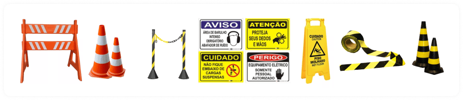

SESMT - Integração
12/36
SESMT - Integração
12/36
Requisito 4: EPI e EPC
De acordo com a Norma Regulamentadora n.º 6, da Portaria 3.214/78 do Ministério do Trabalho, EPI é todo dispositivo de uso individual destinado a proteger a saúde e a integridade física do trabalhador.
Os acidentes/lesões podem ser eliminados ou amenizados, se você utilizar todos os Equipamentos de Proteção Individual recomendados, conforme seu trabalho e/ou setor, tais como: calçado de segurança, uniforme, óculos de proteção, protetor auricular, luvas e creme de proteção, avental, respiradores etc.
Quando existir qualquer dúvida a respeito do uso, conservação e limpeza dos EPI's, consulte a Segurança do Trabalho para os esclarecimentos necessários.
EPC é a sigla para Equipamento de Proteção Coletiva. Estes equipamentos que devem ser fornecidos pela empresa com o objetivo de proteger os trabalhadores dos riscos fornecidos pelo ambiente de trabalho. Em outras palavras, são equipamentos instalados para garantir a segurança do trabalho enquanto um grupo de pessoas (trabalhadores) executa uma determinada atividade ou tarefa.
Os Equipamentos de Proteção Coletiva têm como objetivo:
Os equipamentos são instalados nos postos de trabalho, podendo ser fixos ou móveis e, diferentemente dos Equipamentos de Proteção Individual (EPI's), fornecem proteção a mais de um trabalhador ao mesmo tempo. Por exemplo, um guarda-corpo na beirada de um edifício em construção.